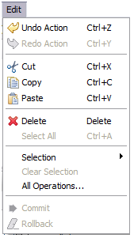

This menu helps you manipulate the selected resources or layer. The contents of this menu will change based on what is selected.
This command reverses your most recent action.
This command re-applies an action that was reversed using Undo.
Remove the selection and places it on the clipboard.
Places a copy of the selection on the clipboard.
Takes the contents of the clipboard and pastes it into the current view or editor.
Remove the current selection.
Select all in the current view or editor.
Access to operations appropriate for the current selection. The list of operations available here is determined by the current perspective.
Clear the current selection.
Since edit tools manipulate the current selection clear selection can be used to cancel any edit already in progress.
Opens the Operations dialog allowing you to choose an operation to perform on the selected object.
The Operations dialog is used to list all operations, while a cut down list of operations provided by the current perspective. Only enabled operations can be performed on the current selection.
Commit changes made to the server or database hosting the information.
Throw away the current work, reverting to the information as stored on the server or database.